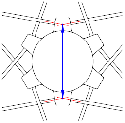
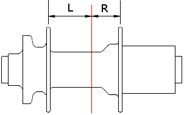
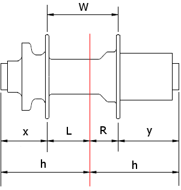
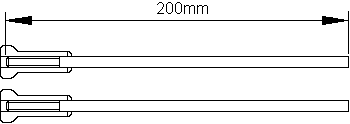
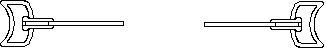
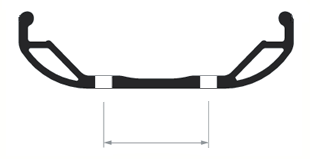
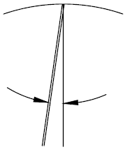

Calculation error
Hub diameter - left should be greater than zero.
Hub diameter - right should be greater than zero.
Flange offset - left should be greater than zero.
Flange offset - right should be greater than zero.
Rim erd should be greater than zero.
Cross - left has invalid characters.
Cross - right has invalid characters.
Spoke diameter - left has invalid characters.
Spoke diameter - right has invalid characters.
Data entry settings :
| Spokes | Select list | |
| Cross | Select list | Select list |
| Spoke dia. | Select list | Select list |
Normal
A hub using J bend spokes.
The hub and rim have the same number of equally spaced holes.
The spoke diameter is important, do not guess this entry!
Every heading in the data entry form and spoke table is clickable and shows detailed information for the particular data input. Make sure you click the heading "Spoke dia" because it's important. Make sure you click the heading "Spoke lengths" in the spoke length table because it tells you how to round the spoke lengths. Calculate button, click anywhere on the background of the data entry form.
For use with stainless steel spokes. It cannot be used for titanium spokes, or any other spoke material, because those materials have different elongation properties.
Select lists are used for spokes, cross and spoke diameter. If you require a value that is not in the list, then change the entry to User Input. Click the space on the data entry form to the right of the entry for spokes and a settings box will be shown allowing you to change from Select list to User input.
Hub diameter
For normal hubs, this is the diameter of the hub flange measured spoke hole centre to centre, sometimes referred to as the PCD (pitch circle diameter).
Straight pull hubs
For cross laced straight pull hubs, the measurement is taken at the extended crossing point of two spokes. If the spokes are close to tangent then the diameter can be measured to the centre of the spoke holes, if they are not tangent (as shown in this diagram) then it's the midpoint between the diameters of the spoke entry and exit holes. A small error when measuring the diameter on cross laced wheels will not affect the spoke lengths.
For radial straight pull hubs the diameter is measured at the position where the spoke seats.
Flange offset
The distance from the hub centre line to the centre of the Left and Right flanges.

The red line is the centre line between the ends of the hub (the faces that locate on the fork or frame).
Measuring the offsets
A rear hub is shown, but the procedure is exactly the same for front hubs and any other type of hub you come across. The calculator requires the centre to left flange and centre to right flange dimensions. This is how you do it...
Measure x and y, then:
L = h - x
R = h - y
Where h = half the hub width.
Always check your calculation. Measure between the flanges (dimension W) and it should be the same as L + R
Spoke hole diameter
The diameter of the spoke holes in the hub.
Good quality hubs have a spoke hole diameter of around 2.5mm or 2.6mm. You don't measure this yourself, it's usually available on the hub manufacturers website. If you can't find it (or don't want to bother looking) then use 2.6mm. Let's say you used 2.6 and the value should have been 2.5 or 2.7, the spoke length error would only be 0.05mm.
Spoke offset
This is only used on straightpull hubs.
The measurement is taken from the centre line to where the spoke head seats. It can be either positive, negative or zero depending on the hub design. For a negative offset enter the value with a - (minus) sign.
For a radially laced straight pull hub, the offset is zero.
It is important to use an accurate measurement for the spoke offset because it directly influences the spoke length, for example a measuring error of 1mm will result in 1mm error in the spoke length. The offset is difficult to measure yourself and the hub manufacturer should give you this value.
Positive offset
Negative offset
Rim ERD
The Effective Rim Diameter. You are strongly advised to measure the ERD yourself because ERD's from other sources are often wrong.
The correct position of the ERD
It is important to measure the ERD using the same type of nipple that you are building the wheel with. If you record your erd measurement for future use, always include the type of nipple you used when measuring it.
Take two spokes and cut them down to exactly 200mm. Screw a nipple onto each measuring spoke using light finger pressure tighten it until it goes no further,* then back it off 2.5mm (for the 56tpi spoke thread, this is 5.5 turns). It's a good idea to glue or crimp the nipples in place to prevent accidental movement during the measuring process. That's the ideal position for the erd, and this calculator will calculate an accurate spoke length that reaches this position. With this calculator, the rule for rounding the spoke lengths is to round up by up to 2mm, which means you will not bottom out on the threads, and you will always find a choice of an odd or even spoke length.
Place in opposite holes in the rim, and hold taut with no tilting (up and down or sideways). Measure between the ends and add 400mm. Average several diameters.


If you are using rim washers, then measure the ERD as described without the washers, then measure the thickness of the washer and add twice this to the measurement. Do not place the washers in the rim whilst measuring the ERD, because with only light pressure applied to the measuring spokes, the washers may not sit completely flush in the rim, and may give a false (over sized) ERD measurement.
* Light finger pressure will not work if the nipple is a self locking design using adhesive, such as the DT nipples that use Proloc, because you won't be able to tighten it to the correct position using finger pressure alone. For this type of nipple, remove the adhesive by continually spinning the nipple up and down the spoke thread using finger pressure, and eventually it will completely free up and be the same as a nipple without adhesive. For Sapim Secure Lock nipples that use a deformed nipple thread, then I can't help you because I do not use these.
Asymmetric rims
If your rim is an asymmetric design with an offset spoke bed, then specify the amount of offset here. The rim manufacturer will tell you the amount of offset which is typically around 4mm. Asymmetric rims are used to improve the tension balance on dished wheels.
When you calculate a spoke table, there will be a note advising you which way to orientate the rim when building the wheel, and you must follow the advised orientation because the left/right spoke lengths are calculated based on the specified orientation.
Width between holes
If there is a measurable gap between the left and right spoke holes then enter it here.
Most rims are centrally drilled, or with a negligible left/right spoke hole stagger, and for these rims, the width between the holes is zero (or just leave the entry blank).
Fatbike rims tend to have a wide hole spacing, and often a double row of spoke holes. Enter the width between the holes, measured centre to centre.
Lacing pattern
If a spoke hole width is specified, then the spoke length calculation assumes normal lacing where the spokes from the hub flange do not cross over to the opposite side of the rim. The exception is Fatbike wheels for offset frames (eg. Surly Pugsley), where the spokes are laced to the right hand set of rim holes.
Frame offset
An offset frame shifts the position of the rear hub outwards towards the right, which affects the spoke lengths. The frame manufacturer will tell you the offset value. An example of an offset frame is the Cannondale AI (Asymmetric Integration) frame, that has an offset of 6mm.
The more common symmetric frame has an offset of zero.
Fatbike offset frames
Examples of Fatbike offset frames are the Surly Pugsley (offset 17.5mm) and the Surly Moonlander (offset 28mm). These offset frames use a standard 135mm freehub, and to achieve the correct tension balance you cannot use a rim with centrally drilled holes.
For a 17.5mm offset frame, use an asymmetric offset rim (more offset the better) or a fatbike rim with a double row of spoke holes (but make sure the width between the holes is not too great). A 28mm offset frame definitely requires a fatbike rim with a double row of spoke holes. Anyway, do some calculations and keep an eye on tension balance, and always read the notes displayed with the calculation.
Fatbike offset forks
Offset frames can have a matching offset fork. For example, the Surly Pugsley has two fork options, a 100mm symmetrical fork, and a 135mm 17.5mm offset fork. With an offset fork you actually build a wheel that is identical to the rear wheel, so for offset Fatbike front wheels, select a rear wheel in the selection list.
Spokes
The number of spokes in your wheel.
If the required number is not in the list, change the input to User Input (see the Help guide).
Cross
When choosing the number of crosses, you should take into account the following:
- Spoke entry angle. Ideally this should be no more than 8 degrees.
- Spoke head clearance. The spoke should not overlap the head of the adjacent spoke.
The values for spoke entry angle and spoke head clearance are shown in the spoke length calculation, click those headings in the calculation for more information.
Radial lacing
For radial lacing select 0 cross.
When radial lacing, lace the spokes with the heads out (elbows in). This reduces the stress on the hub flange, and for dished wheels helps improve the left/right tension balance. Lacing heads out results in a slightly shorter spoke length, and the calculator will make the necessary adjustment.
Straight pull hub cross pattern
With a straight pull hub you have no choice with the cross pattern because it's dictated by the hub design. Spoke head clearance does not apply to straight pull hubs.
Shimano straight pull hub cross count
The description for Shimano straight pull hubs is misleading and confusing where it says Intersections: 3 cross only including spoke heads in hub shell. Some spoke calculators may call this 2 cross.
The cross in the hub shell should not be counted, because it is not a cross for spoke length purposes. For this calculator you should not include the hub shell cross, and in this example, the cross value will be 2.
Spoke diameter
The spoke diameter is used when calculating the elastic elongation of the spoke due to spoke tension. The elongation is then used to determine a more accurate spoke length. It's therefore important to specify the correct diameter of the spokes you are using.
Round spokes
Diameter of the spoke. For a butted (swaged) spoke, use the diameter of the central portion.
If the required diameter is not in the list, change the input to User Input (see the main help guide).
Bladed spokes
Bladed spokes are made by flattening a round spoke. For a bladed spoke use the round spoke equivalent. For example:
| Spoke | Diameter |
|---|---|
| Sapim CX-Ray | 1.5 |
| DT Aerolite | 1.5 |
| DT Aerospeed | 1.8 |
| DT Aerocomp | 1.8 |
If your bladed spoke is not listed, then ask the spoke manufacturer what the diameter of the spoke is before being forged (their website doesn't usually specify this, so you need to ask).
Calculation stopped
Data errors
How to round the spoke lengths
Always round the fractional spoke lengths up and never down.
The calculated spoke length will reach the point where you measured the rim erd, and you are advised to measure the erd using the technique shown in this guide. The calculated lengths are therefore the recommended minimum, so always round the fractional spoke lengths up. You can round up by up to 2mm, which means you can always find an even or odd size spoke length.
Here are some examples of how you would select an even or odd size based on the calculated length.
| Calc | Even | Odd | |
|---|---|---|---|
| 260.0 | 260 262 | 261 | 260 on the even side is the absolute minimum, still okay, but 262 will be easier to build. |
| 260.4 | 262 | 261 | Do not choose 260 for the even size because it will be too short. |
| 260.8 | 262 | 261 | |
| 261.0 | 262 | 261 263 | 261 on the odd side is the absolute minimum, still okay, but 263 will be easier to build. |
| 261.2 | 262 | 263 | Do not choose 261 for the odd size because it will be too short. |
Radial lacing
You should lace a radial wheel with the spoke heads out (elbows in), doing it the other way (heads in) puts more stress on the hub flange as the spoke is pulled over it. With all the spokes lying on the inside, the hub flange offset distance is reduced, and for radial lacing the calculator will subtract 2mm from your flange offset dimension. You can see this is the calculation log.
The biggest influence on spoke length accuracy is the accuracy of the hub and rim measurements, particularly the rim erd. If you use data found on the Internet, then there's a good chance it will be wrong, and so will the resulting spoke lengths. You should always measure your own components exactly as shown in the guide (click the headings in the data entry form).
Spoke head clearance
The distance between the spoke and the head of the adjacent spoke.
As the number of crosses increases, the spoke moves closer to the head of the adjacent spoke until it touches (clearance zero), then overlaps it (clearance negative). The overlap should be avoided because it puts an unnecessary bend in the spoke close to the elbow, and it also interferes when placing the spokes in the hub.
Touching
Overlap
If the spoke head clearance is a small amount (say 0.5mm), then it still should be okay. Anything more than this then it's not advisable.
Note - the calculation uses a spoke head diameter of 4mm.
Spoke entry angle
The angle the spoke makes when entering the rim.
Standard nipples can swivel about 6 or 7 degrees. Nipples with a spherical design such as the Sapim Polyax and DT ProHead can swivel more (9 degrees for the Polyax).
For your hub, rim and spoke count, choose a cross pattern that results in a spoke entry angle of no more than 8 degrees, otherwise the stress on the spoke threads can result in fatigue failures (the spoke could snap at the threads).
Some rims are drilled at an angle to allow the spoke to follow the natural spoke line, in which case the spoke entry angle is not an issue. Examples of this are the WTB rims with 4D angled drilling.
Tension ratio
This is the ratio between the left and right side spoke tensions. For example, if the spoke tension on the 100% side of the wheel is 120kg and the other side is 60%, then the tension in that side would be 72kg.
This is for information only. When you build your wheel, this is how it will turn out. Tension ratio is calculated using the hub flange offsets and the spoke lengths. There is nothing you can do during building that will affect this ratio.
Left and right is from the perspective of the rider.
Left side
Sometimes referred to as the non drive side. For disc brake wheels, the disc rotor is located on the left side.
Right side
Sometimes referred to as the drive side (where the chain and sprockets are).